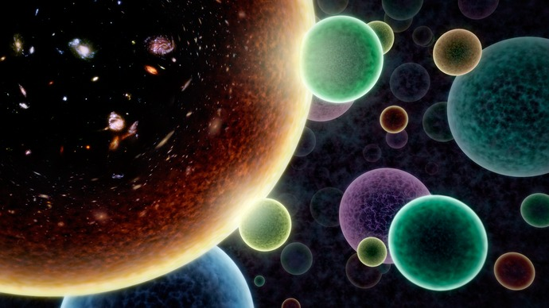
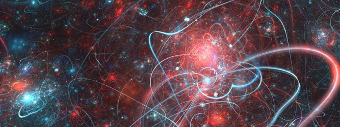

The Multiverse is a hypothetical collection of potentially diverse observable universes, each which would comprise everything that is experimentally accessible by a connected community of observers. It suggests that our universe might just be one of many.
Levels of the Multiverse
Physicist Max Tegmark categorized the multiverse into four distinct levels:
Level I: An Extension of our Universe - Regions of space so far away that we can never see them, but they follow the same laws of physics.

Level II: Bubble Universes - Other universes exist as "bubbles" in a space that is constantly expanding. Some bubbles might have different physical constants (like different strengths of gravity).
Level III: Many Worlds (Quantum) - Based on quantum mechanics, every time a choice or a quantum event occurs, the universe branches into multiple versions of itself.
Level IV: Mathematical Structures - Every mathematical structure exists as a physical reality. This is the most abstract form of the multiverse.
Key Theories

Several scientific theories support the possibility of a multiverse:
Eternal Inflation: Suggests that the "Big Bang" is happening in different places all the time, creating a sea of universes.
String Theory: Proposes that our universe exists on a "brane" (membrane) floating in a higher-dimensional space alongside other branes.
Quantum Mechanics: Suggests that all possible outcomes of a situation actually happen in separate, branching timelines.
Evidence or Fiction?
Currently, there is no direct experimental evidence for the multiverse. It remains a mathematical and theoretical possibility. Some scientists argue that it is a necessary consequence of our current understanding of Cosmic Inflation, while others believe it is a "philosophical" concept rather than a scientific one because it cannot be proven or disproven.